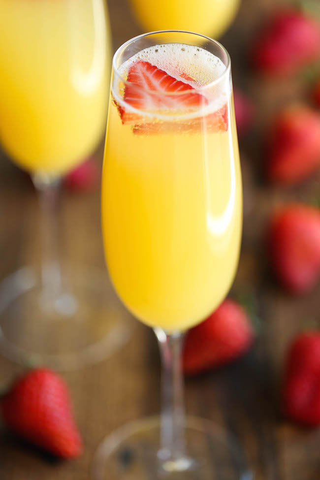

One of my favorite drinks is an old fashioned made by my brother.

The Old Fashioned is a cocktail made by muddling sugar with bitters, then adding alcohol, such as whiskey or brandy, and a twist of citrus rind.
Another favorite of mine is a mimosa from The Belvedere.
A mimosa is drink made from equal parts champagne and orange juice. It is traditionally served during brunch.
Back to Home